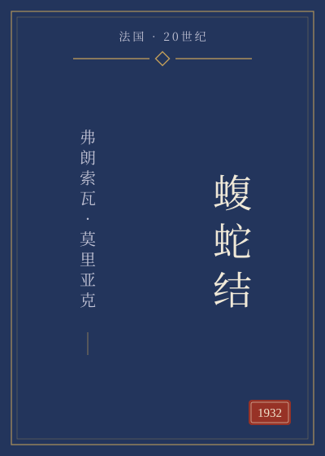
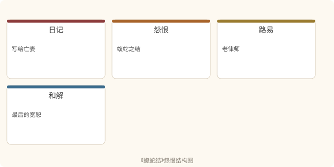

蝮蛇结
一、基本信息
| 作者 | 弗朗索瓦·莫里亚克 |
|---|---|
| 成书/出版 | 1932年（Britannica：Le Noeud de vipères (1932; Vipers' Tangle...)——'often considered Mauriac's masterpiece'） Francois Mauriac — Encyclopaedia Britannica（百科全书） |
| 国别/地区 | 法国 |
| 时代 | 现当代 · 20世纪 |
| 体裁 | 长篇小说 |
| 语言 | 法语 |

《蝮蛇结》怨恨结构图（主题·结构图）
二、创作背景
Britannica（B289）：'Le Noeud de vipères (1932; Vipers' Tangle...) is often considered Mauriac's masterpiece.'（常被视为莫里亚克的杰作——B289）；作者（B289）：1952诺奖、1933法兰西学院；'somber, austere psychological dramas'。
文体（通说待核）：书信体——老律师路易的'复仇'日记写给妻子（死后寄出）。
三、内容脉络
路易的日记：对妻室的怨恨清算——与最后的和解（通说待核）。
四、主要人物表
| 人物 | 身份 | 说明 |
|---|---|---|
| 路易 | 老律师 | （通说待核） |
| 伊莎 | 妻子 | （通说待核） |
五、主题与艺术特点
- 怨恨的'蝮蛇结'（书名通说待核）。
- 书信体的忏悔（通说待核）。
- 天主教的救赎（B289 语境：Catholic novelist）。
六、影响与评论
- Britannica：'often considered Mauriac's masterpiece'（B289）。
Francois Mauriac — Encyclopaedia Britannica（百科全书） - Britannica：1952年诺贝尔文学奖（B289 作者级）。
Francois Mauriac — Encyclopaedia Britannica（百科全书）
七、阅读建议
难点
- 书信体独白。
- 天主教语境。
- 《蝮蛇结》（广西师范大学出版社，通说待核）。
- 法文原版（公有领域渐近）。
先《爱的荒漠》后本作。
八、待核实
- 1932年出版（Grasset说）核对。
- 路易/伊莎人名核对。
- '蝮蛇结'的题解待核。
本页主要来源
弗朗索瓦·莫里亚克的其他收录作品：爱的荒漠